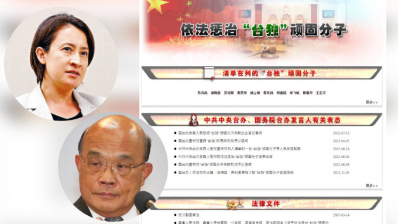

萧美琴（上）及苏贞昌（下）均被列国务院台办官网「依法惩治『台独』顽固分子」的名单上。
继6月发布惩治「台独」意见后，国务院台办官网新增「依法惩治『台独』顽固分子」浮窗专栏，台湾副领导人萧美琴、国安会秘书长吴钊燮、国防部长顾立雄等10人被列入「台独」顽固分子名单，并置顶在专栏最上方。相关专栏同时提供了举报邮箱，获大陆公安部转载，震慑意味相当浓厚。上海学者吴心伯对《星岛》表示，此举显示大陆正加强打击和遏制台独势力的法律手段，相信未来会有更多台独分子入列。
台湾陆委会回应，陆方相关作为，只会对两岸交流互动制造更多障碍与伤害。名列其中的民进党立委王定宇回应，「硬要把台湾混淆成中国的一部分，不仅违背事实而且昧著良心」。在野国民党表示，互相贴标签的行为非常不利两岸沟通跟区域和平，对于此事表达遗憾与谴责。
吴心伯：未来会有更多台独分子入列
上海复旦大学国际问题研究院院长吴心伯对《星岛》表示，针对岛内台独势力猖獗和外部势力干涉台湾事务，大陆正加强打击和遏制台独势力的法律手段。
他指出，目前台独顽固分子清单列入10人，相信未来会有更多人入列，也会有更多打击手段和举措推出，「这对于潜在的、尚未列入名单的台独分子，都是重大的震慑。」
上海台湾研究所长倪永杰分析，这可视作落实「惩独」司法文件具体动作，有被点名案例、有举报途径，将可发挥威慑、震慑作用。
台湾学者吴瑟致指出，这是对台法律战延伸，藉此建构发布「惩独22条」意见后的惩戒模式，达到杀鸡儆猴之效。台湾的国策研究院执行长王宏仁告诉中央社，大陆藉由一步一步的威吓举措令人感到害怕，并接受其提出的条件。
Advertisements